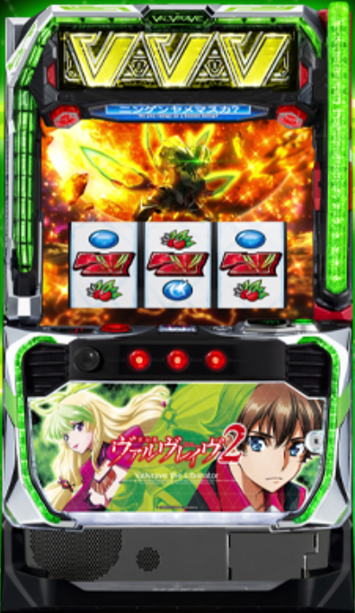

目次

Lパチスロ 革命機ヴァルヴレイヴ2 VALVRAVE 2 ｜ SANKYO（三共）
設定6 機械割
114.9%
設定1 機械割
97.7%
ボーナス・AT間天井
1,500G+α
CZ間天井
999G+α
AT純増
約9.0枚/G
革命ラッシュ継続率
約75%

| 設定 | 初当たり合算 | CZ確率 | 機械割 |
|---|---|---|---|
| 1 | 1/476 | 1/324 | 97.7% |
| 2 | 1/473 | 1/324 | 99.3% |
| 4 | 1/464 | 1/324 | 104.7% |
| 5 | 1/459 | 1/324 | 110.8% |
| 6 | 1/456 | 1/324 | 114.9% |
※ 設定3非搭載の5段階設定（1,2,4,5,6）。初当たりは革命ボーナス・決戦ボーナス・AT直撃の合算。CZ確率は全設定共通。
| 設定 | 機械割 | 3時間 | 6時間 | 12時間 |
|---|---|---|---|---|
| 1 | ||||
| 2 | ||||
| 4 | ||||
| 5 | ||||
| 6 |
| 設定 | 機械割 | 3時間 | 6時間 | 12時間 |
|---|---|---|---|---|
| 1 | ||||
| 2 | ||||
| 4 | ||||
| 5 | ||||
| 6 |
| 項目 | 数値 |
|---|---|
| 50枚あたり回転数 | 約32.7G |
| BAR揃い出現率 | 約1/682 |
※ チャンス役の詳細確率は現在調査中です。ルーンがチャンス役として機能します。
| 天井種別 | 通常時 | 設定変更後 | 恩恵 |
|---|---|---|---|
| ボーナス・AT間 | 1,500G+α | 1,000G | ボーナス or AT |
| CZ間 | 999G+α | — | CZ当選 |
| 周期天井 | 最大6周期 | 最大3周期 | CZ当選 |
| ボーナス | 特徴 | AT期待度 |
|---|---|---|
| 革命ボーナス | 通常のボーナス | — |
| 決戦ボーナス | AT直結の上位ボーナス | AT突入濃厚 |
※ 決戦ボーナス比率は設定1で約45%、設定6で約40%。
設定変更後はボーナス・AT間天井が1,500G→1,000Gに短縮。周期天井も最大6周期→最大3周期に短縮されます。
設定変更後は約69%で通常Aモードに移行。3周期以内にCZに当選するため、朝一は比較的早い段階でチャンスが訪れます。